This lab will demonstrate how to setup a typical multiple operation simulation involving different heat transfer and forging operations. During this lab we will also attempt to highlight various features of the system that user can include in other type of multiple operation situations. These operations can be a set of heat resting operation (see Fig. 2DHTRL1.1.), a set of deformation operations with changing dies between operations, or a combination of both heat transfer and deformation operations (see Fig. 2DHTRL1.1..). The model is 2D axisymmetric and the following 3D images are used for illustration purpose only.
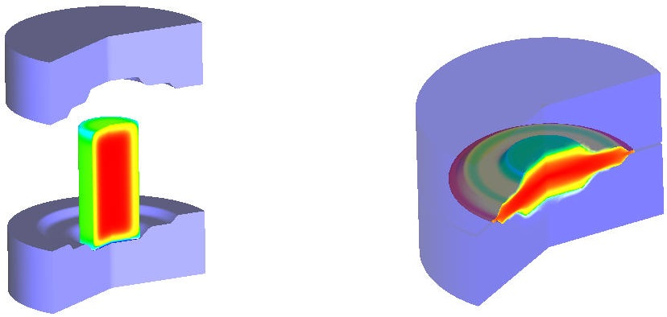
3D illustration of Heat Resting and Forming operations
In this lab, we setup a four operations model involving one ‘Heat Furnace’, ‘Heat Transfer', ‘Heat Resting’ one ‘Deformation’ and Heat Dwelling operations. The part is cylindrical workpiece, which first undergoes a furnace heating operation for one hour at 2000 F, followed by a heat transfer operation for 15 seconds during the transfer from the furnace to the forming station. This operation will be followed by a heat resting operation where the workpiece rests on forming dies for 4 seconds prior to a deformation operation. Deformation operation runs for a specific stroke of (7.25”) the upper die. Finally Dwelling operation for 4 seconds. The entire sequence can be setup using this system and all the operations can be simulated without user intervention in batch mode.
1.1. Creating New Problem and Adding Operations
1.2. Operation1: Furnace Heating Setup
1.6. Operation5: Heat Dwelling
On a Windows machine, go to the  button select DEFORM-v1x.xxx (.xxx indicates version number E.g. v14.0.2.)
and select DEFORM GUI Main vxx.xx from the menu. The DEFORM GUI Main window will appear.
button select DEFORM-v1x.xxx (.xxx indicates version number E.g. v14.0.2.)
and select DEFORM GUI Main vxx.xx from the menu. The DEFORM GUI Main window will appear.
Create a new problem either by selecting File  New Problem or by clicking the New Problem
New Problem or by clicking the New Problem  icon. The Problem Setup window will appear as shown in Fig. 2DHTRL1.2. Select "Integrated Manufacturing Process"
radio button and unit system as "English" radio button in unit field. Define Problem Name as " Heat_Transfer_Operations" and make sure the “Show option dialog” check box is turned
on (if we do not turn on the “Show option dialog” check box, then we will not get the New Project dialog in MO UI). Then click on
icon. The Problem Setup window will appear as shown in Fig. 2DHTRL1.2. Select "Integrated Manufacturing Process"
radio button and unit system as "English" radio button in unit field. Define Problem Name as " Heat_Transfer_Operations" and make sure the “Show option dialog” check box is turned
on (if we do not turn on the “Show option dialog” check box, then we will not get the New Project dialog in MO UI). Then click on  button to open
a new Problem using the Deform Integrated Manufacturing Process.
button to open
a new Problem using the Deform Integrated Manufacturing Process.
New Problem Popup
MO wizard will open, along with project naming window (see Fig. 2DHTRL1.3.), defined problem name is updated as
‘Heat_Transfer_Operations’ as the project name and selected unit system updated. User can also change the Unit system and add operation by selecting from First operation pull down list and checkbox (see Fig. 2DHTRL1.3.).
Using Copy Existing project option we can import previous saved projects as new project. Select the First operation as 2D Heat transfer operation and check the check box to add Heat transfer operation
as first operation. Click on  to continue to open the operation.
to continue to open the operation.
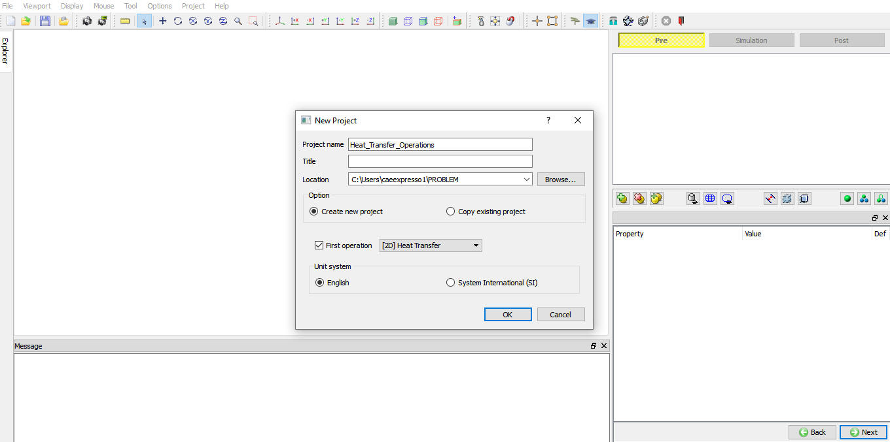
MO Wizard New Project Opening Window
Multiple Operation wizard will opens new project with one 2d Heat transfer operation. Add two more heat transfer operations for Air transfer and Resting, one Forming operation and heat transfer operation for Dwelling after forming from Explorer Operations
list clicking  button as shown in Fig. 2DHTRL1.4.
button as shown in Fig. 2DHTRL1.4.
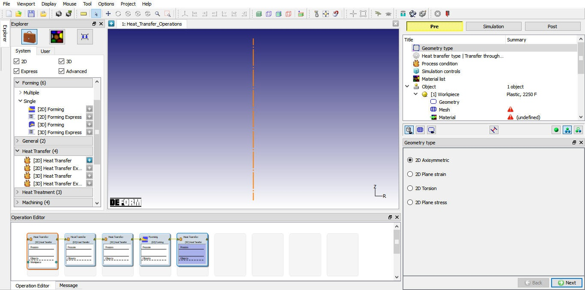
Adding Operations
For first heat transfer operation change the operation name as "Furnace Heating" by double clicking on Operation name in Operation Editor window as shown in Fig. 2DHTRL1.5. and press Enter in Keyboard.
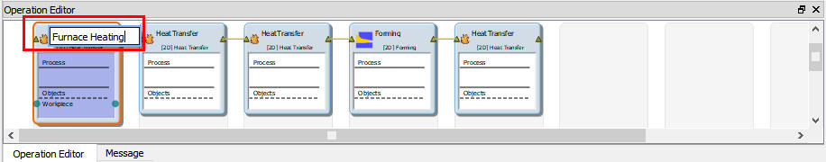
Name the first operation as Furnace Heating
In this lab we are using Axisymmetric geometries, so activate 2D Axisymmetric radio button in geometry type window as shown in Fig. 2DHTRL1.4.,
then click on  to continue.
to continue.
Select Heat in Furnace heat transfer type for Furnace heating operation as shown in Fig. 2DHTRL1.6. This will set the default heat transfer settings for heating operation. Click on  to continue.
to continue.
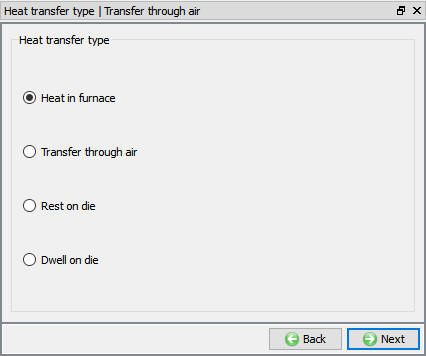
Heat transfer type selection for Furnace Heating
Define Heating time as 3600 sec (one hour of heating) at 2000°F furnace temperature or environment temperature as shown in Fig. 2DHTRL1.7. and click on  to continue.
to continue.
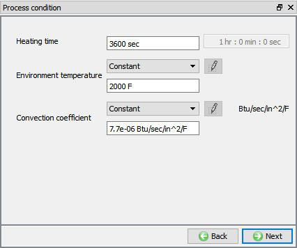
Process Condition settings for Furnace Heating
Keep only Heat Transfer mode checked as only heat transfer is modeling as shown in Fig. 2DHTRL1.8. and click on  to continue.
to continue.
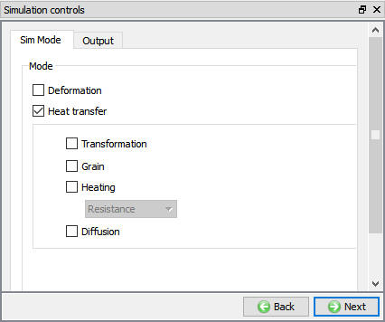
Simulation Controls settings for Furnace Heating
In Material window, load the material AISI-8620 from DEFORM Material library, from Steel category using  (Load material data from library) option.
This can be done as shown in Fig. 2DHTRL1.9. by clicking
(Load material data from library) option.
This can be done as shown in Fig. 2DHTRL1.9. by clicking  button. Material can also be load from Materials list in Explorer. Then click on
button. Material can also be load from Materials list in Explorer. Then click on  for Material list page.
for Material list page.
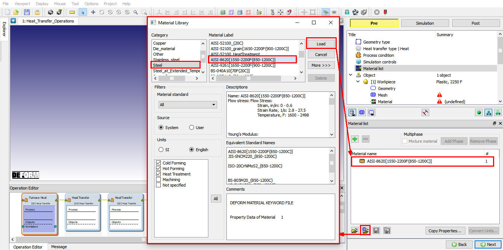
Importing Workpiece material from DEFORM library
In Material AISI-8620 page to check the thermal material properties, select Thermal tab (see Fig. 2DHTRL1.10.)
and click on  (Define) button next to Thermal Conductivity to observe the Thermal conductivity function of temperature as shown in Fig. 2DHTRL1.11.
(Define) button next to Thermal Conductivity to observe the Thermal conductivity function of temperature as shown in Fig. 2DHTRL1.11.
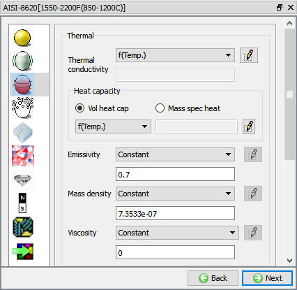
Material property definition window for AISI-8620
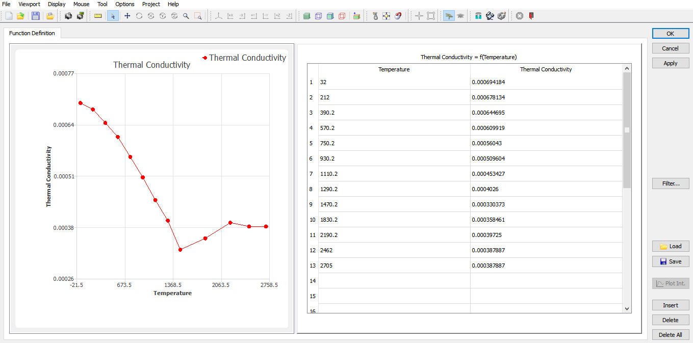
Thermal Conductivity function of temperature data for AISI-8620
Similarly click on  (Define) button next to Heat capacity and observe the function data as shown in Fig. 2DHTRL1.12.
(Define) button next to Heat capacity and observe the function data as shown in Fig. 2DHTRL1.12.
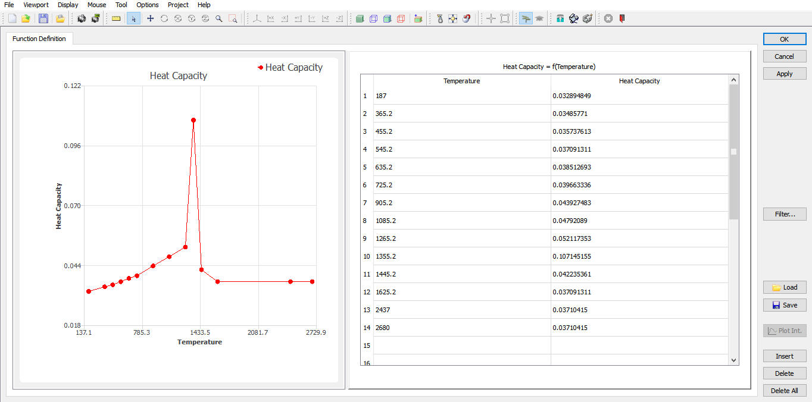
Heat capacity function of temperature data for AISI-8620
For Emissivity and Mass density constant value is defined as shown in Fig. 2DHTRL1.10. Then click
on  for Material properties and Object window, as only Workpiece object is enough heating operation.
for Material properties and Object window, as only Workpiece object is enough heating operation.
In Workpiece object window keep the object type as ‘Plastic’ (see Fig. 2DHTRL1.13.). At this stage user
can also specify initial temperature of the workpiece as 68°F. Click on  to continue and import the workpiece geometry.
to continue and import the workpiece geometry.
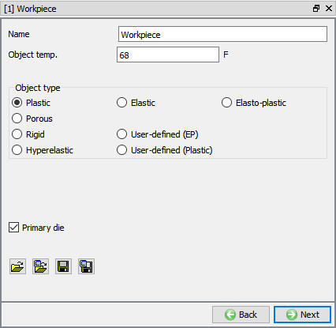
Workpiece Object definition
In Geometry page, click on  ( Load Geometry from Library) button and import ‘Disk_wkp.igs’ as shown in Fig. 2DHTRL1.14. Other options available at this stage are defining the workpiece from the Primitive geometry and 2D geometry Editor using
( Load Geometry from Library) button and import ‘Disk_wkp.igs’ as shown in Fig. 2DHTRL1.14. Other options available at this stage are defining the workpiece from the Primitive geometry and 2D geometry Editor using  and
and  options. Click
options. Click  If System ask the 2D\LABS\ location to be saved as library location.
If System ask the 2D\LABS\ location to be saved as library location.
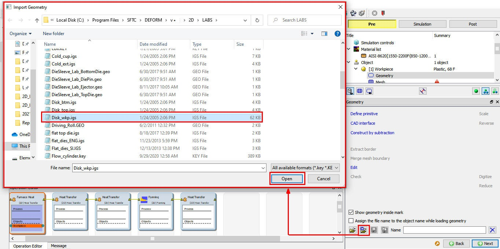
Import geometry from DEFORM library
Once the geometry is imported click on  option to check and correct the imported geometry if required (see Fig. 2DHTRL1.15.).
Depending upon the imported geometry type, after clicking on ‘Check & Correct Geometry’ makes sure that the object boundary mark (shaded region next to the boundary) remains inside the boundary. If the system fails to correct the geometry choose
among the options ‘System detects’, ‘Closed’ and ‘Open’ to correct the geometry.
option to check and correct the imported geometry if required (see Fig. 2DHTRL1.15.).
Depending upon the imported geometry type, after clicking on ‘Check & Correct Geometry’ makes sure that the object boundary mark (shaded region next to the boundary) remains inside the boundary. If the system fails to correct the geometry choose
among the options ‘System detects’, ‘Closed’ and ‘Open’ to correct the geometry.
If the geometry orientation is not correct, the system attempts to correct the same during the meshing stage, but it is recommended to check and correct the object geometry as and when we import the same. This procedure remains the same any time we
need to import the object geometry. Click on  to continue.
to continue.
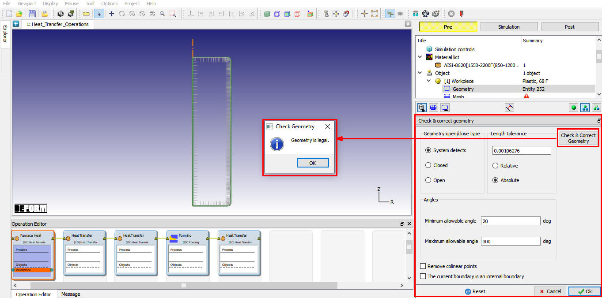
Geometry checking and correcting
Generate the mesh using 2000 elements (see Fig. 2DHTRL1.16.). Complete range of meshing options are also available in expert
mode ( ), if user needs to have more control on the mesh generated. Click on
), if user needs to have more control on the mesh generated. Click on  to continue.
to continue.
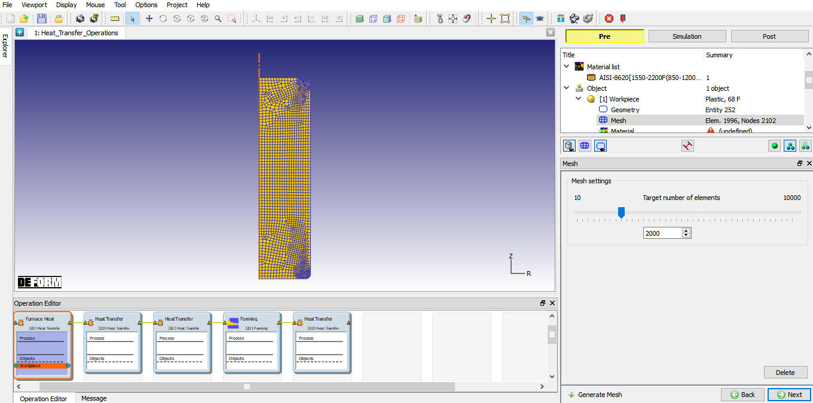
Mesh generation window
To assign material for workpiece select the material ‘AISI-8620’ from material window. This can be done as shown in Fig. 2DHTRL1.17. Click on  to continue.
to continue.
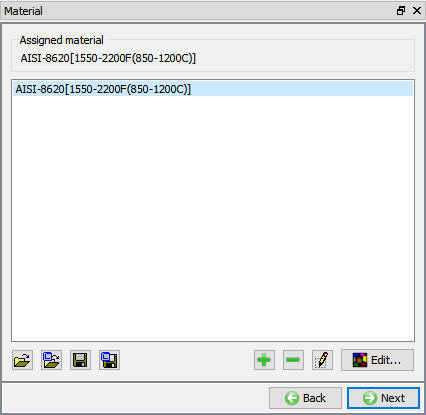
Object material selection window
In BCC page, check the default assigned Heat exchange with Environment BCC to the entire outer surface of the Billet (which does not include the centerline since these nodes are inside the object) by clicking on Defined under Heat exchange with Environment. Default BCC are assigned automatically due to selection of problem type as axisymmetric (see Fig. 2DHTRL1.18.).
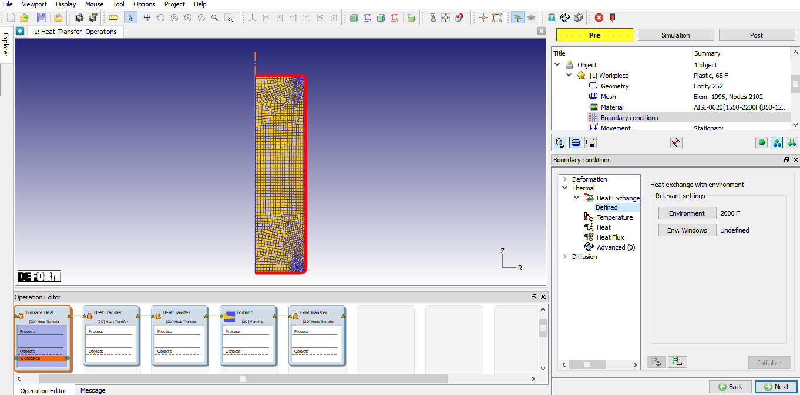
Boundary condition definition for Furnace Heating
Click on  until Step controls window as there is no object positioning and Thermal stopping controls definition is required.
until Step controls window as there is no object positioning and Thermal stopping controls definition is required.
Set the number of simulation steps as 100 at 36 sec each and saving every 10 steps (see Fig. 2DHTRL1.19.).
Advanced Simulation controls settings are available in expert mode ( ). Click on
). Click on  to proceed
to the database generation stage.
to proceed
to the database generation stage.
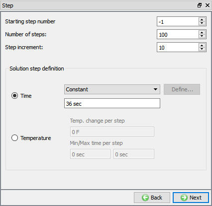
Simulation controls settings for Furnace Heating
In the database generation stage user can check the data required for the analysis and proceed to generate the database (see Fig. 2DHTRL1.20.).
First operation of any multiple operations, user is required to generate the database. For all the subsequent operations we only need to setup the process data and simulation controls. At this stage user also has an option of importing a keyword file,
which is particularly useful for the later operations. Functionality of this feature of ‘Append user defined keyword file’ will be discussed in the later sections of this lab. Click on  to proceed to the next operation of ‘Air Transfer’.
to proceed to the next operation of ‘Air Transfer’.
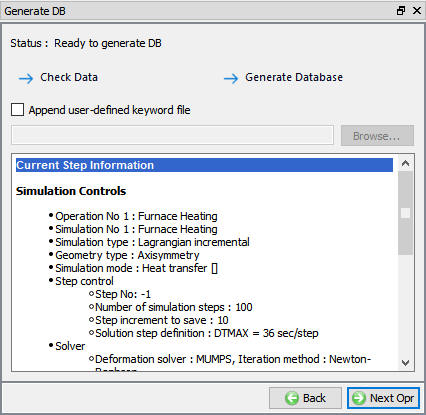
Database Generation window for first operation
In this operation we setup a heat transfer to air stage of the operation involving a 15 sec transfer time of the part from furnace to the forming station. During this time the part which is at about 2000°F undergoes some cooling in ambient air.
Name the operation as "Air Transfer" by double clicking on Operation name in Operation Editor and press Enter from Keyboard to close. Select 'Transfer through air' heat transfer type as shown in
Fig. 2DHTRL1.21. and click on  to continue.
to continue.
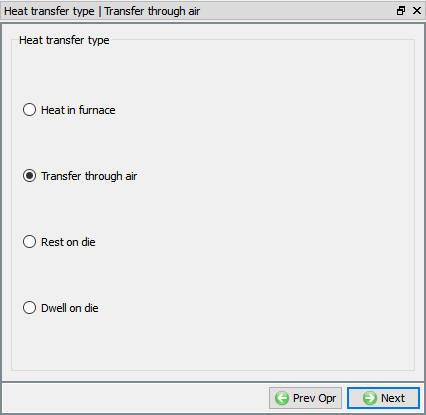
Heat Transfer type selection for Air Transfer
Define the process conditions as transfer time of 15 sec in a 68°F environment using the default convection coefficient as shown in Fig. 2DHTRL1.22.
Process condition settings for Air Transfer
Click on  until Workpiece object window and accept object type as ‘Read from DB’ (see Fig. 2DHTRL1.23.).
This indicates that workpiece thermal history from the furnace heating operation will be available as a starting data for this operation. Click on Step controls branch in operation tree.
until Workpiece object window and accept object type as ‘Read from DB’ (see Fig. 2DHTRL1.23.).
This indicates that workpiece thermal history from the furnace heating operation will be available as a starting data for this operation. Click on Step controls branch in operation tree.
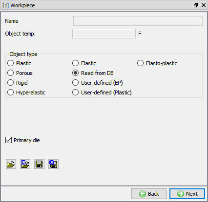
Read from DB object selection for workpiece
In Step Controls window define 15 steps at 1 sec increment and saving at every 5 steps (see Fig. 2DHTRL1.24.).
Click on  to continue.
to continue.
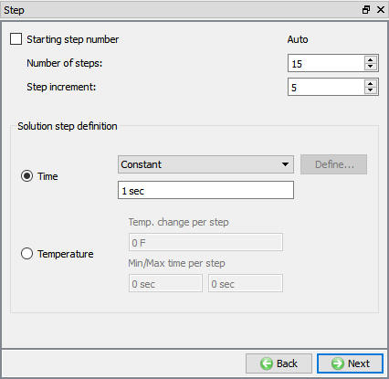
Step controls settings for Air Transfer
Click on  to open the Heat resting operation (see Fig. 2DHTRL1.25.),
as database will generate for subsequent operations during simulation in batch mode.
to open the Heat resting operation (see Fig. 2DHTRL1.25.),
as database will generate for subsequent operations during simulation in batch mode.
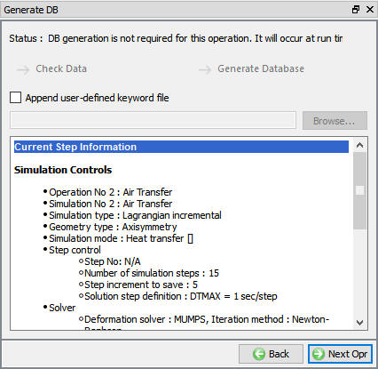
Database generation window for subsequent operations in batch mode
Note:
At this stage user has an option to bring in additional object or simulation data by opting to ‘Append user defined keyword file’ (see Fig. 2DHTRL1.22.). Please not that, this keyword when defined will be read in by the system before the DB generation of the second operation. However no checking of the user defined data from this keyword file will be done at this stage.
In this operation we setup a heat transfer where the workpiece rests on forming dies for 4 seconds prior to a deformation operation.
Name the operation as "Heat Resting" by double clicking on Operation name in Operation Editor and press Enter from Keyboard to close. Select 'Rest on die' heat transfer type as shown in Fig. 2DHTRL1.26. and click on  to continue.
to continue.
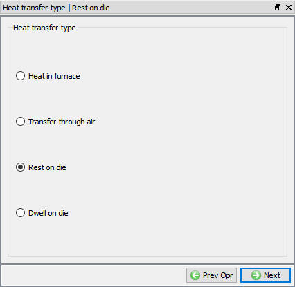
Heat transfer type selection for heat resting operation
Set process condition as resting time of 4 sec in a 68°F environment using the default convection coefficient as shown in Fig. 2DHTRL1.27. Click
on  to continue.
to continue.
Process condition settings for Heat Resting operation
Click on  until Object window and accept the ‘Number of Objects’ as 3 as the total number of objects, as we will be bringing in both the dies at 300°F for the resting
operation. We can now see the object tree is expanded to include both the dies, details for which will be now be defined.
until Object window and accept the ‘Number of Objects’ as 3 as the total number of objects, as we will be bringing in both the dies at 300°F for the resting
operation. We can now see the object tree is expanded to include both the dies, details for which will be now be defined.
Click on Top Die in operation tree to define the Dies. Accept the Top Die temperature 300°F and Object type as rigid as shown in Fig. 2DHTRL1.28. Click on  to continue.
to continue.
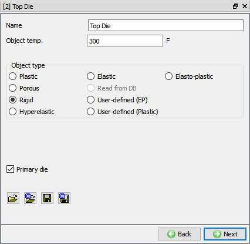
Top die object definition window for heat resting operation
In Top die Geometry window, click on  (Load Geometry from Library) button and import ‘Disk_top.igs' as shown in Fig. 2DHTRL1.29.
(Load Geometry from Library) button and import ‘Disk_top.igs' as shown in Fig. 2DHTRL1.29.
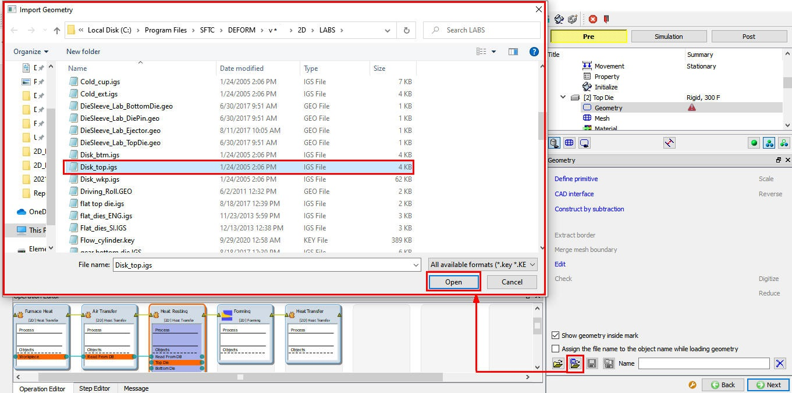
Importing the top die geometry from DEFORM Library
Click on  and generate mesh using 600 elements as shown in Fig. 2DHTRL1.30. Click
and generate mesh using 600 elements as shown in Fig. 2DHTRL1.30. Click
 to material page.
to material page.
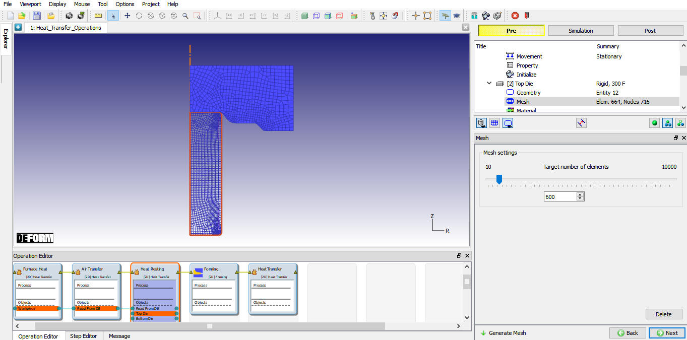
Generating mesh for Top die
Load the material AISI-H13 from DEFORM Material library, from Die_material category using  (Load material data from library) option as shown
in Fig. 2DHTRL1.31. Select the loaded material to assign it to the Top Die.
(Load material data from library) option as shown
in Fig. 2DHTRL1.31. Select the loaded material to assign it to the Top Die.
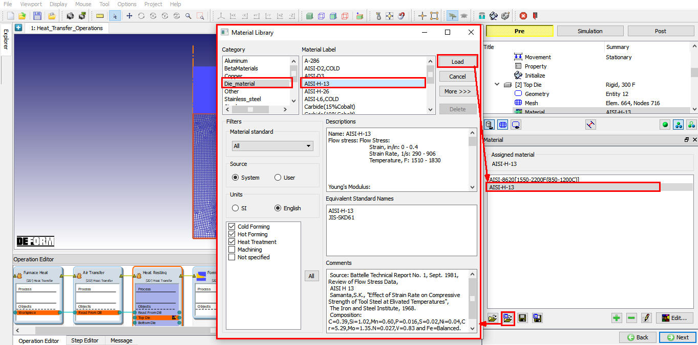
Loading Die material from DEFORM library
In the ‘Define BCC’ window, ‘Heat Exchange with Environment’ BCC automatically assigned to the all sides excluding axis side. Click on Defined branch under Heat Exchange with Environment BCC to confirm the BCC definition (see Fig. 2DHTRL1.32.). Click on Bottom Die branch in operation tree to lower die.
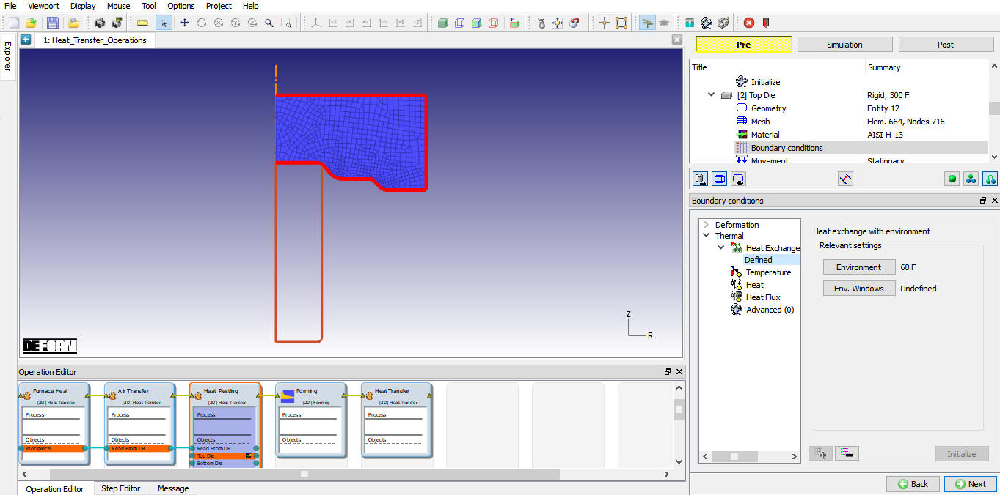
Heat exchange with Environment BCC for top die
For Bottom die also accept 300°F Object temperature and Rigid object type. Click on  to continue.
to continue.
In Bottom die geometry window, click on  (Load Geometry from Library) button and import ‘Disk_btm.igs' as shown in Fig. 2DHTRL1.33. Click on
(Load Geometry from Library) button and import ‘Disk_btm.igs' as shown in Fig. 2DHTRL1.33. Click on  to mesh page.
to mesh page.
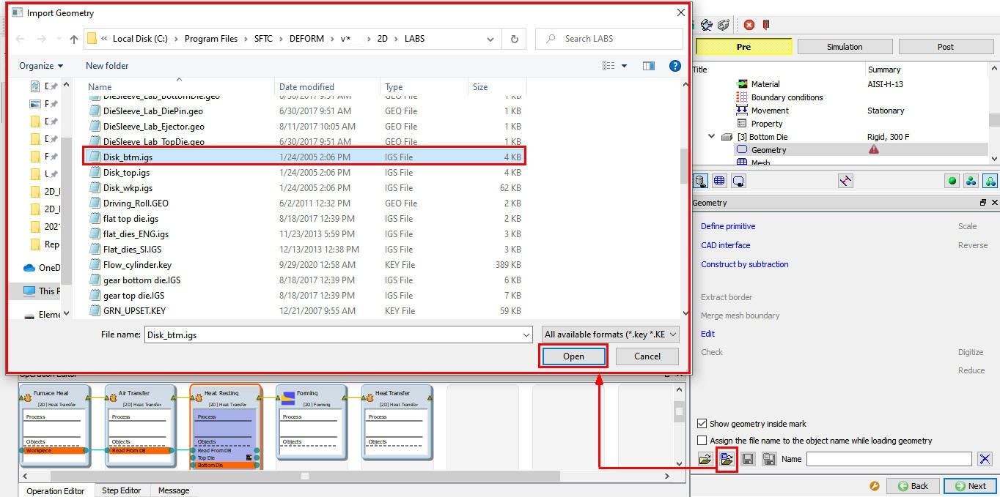
Loading Bottom die geometry from DEFORM library
Generate mesh using 600 elements as shown in Fig. 2DHTRL1.34.
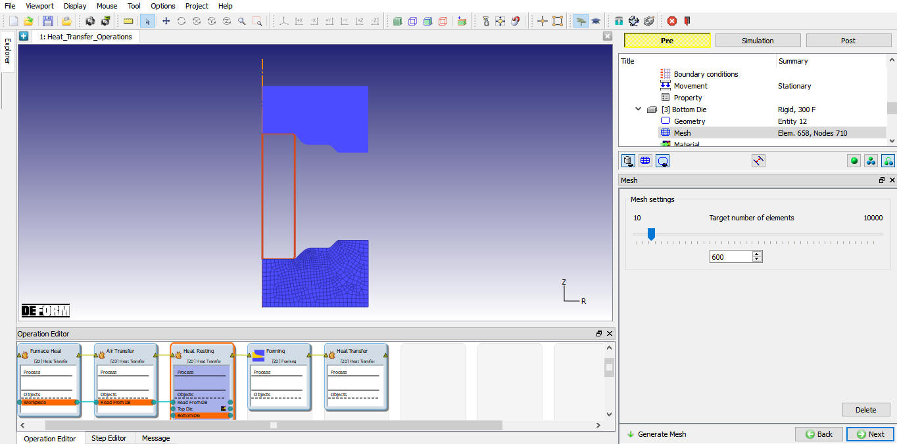
Generating mesh for bottom die
Select AISI-H13 material from material list to assign it to the Bottom Die. Click on  to Boundary condition.
to Boundary condition.
Confirm the automatically assigned Heat Exchange with Environment BCC to all sides excluding axis side by clicking on Defined under Heat exchange with Environment BCC as shown in Fig. 2DHTRL1.35. Click on  until positioning page.
until positioning page.
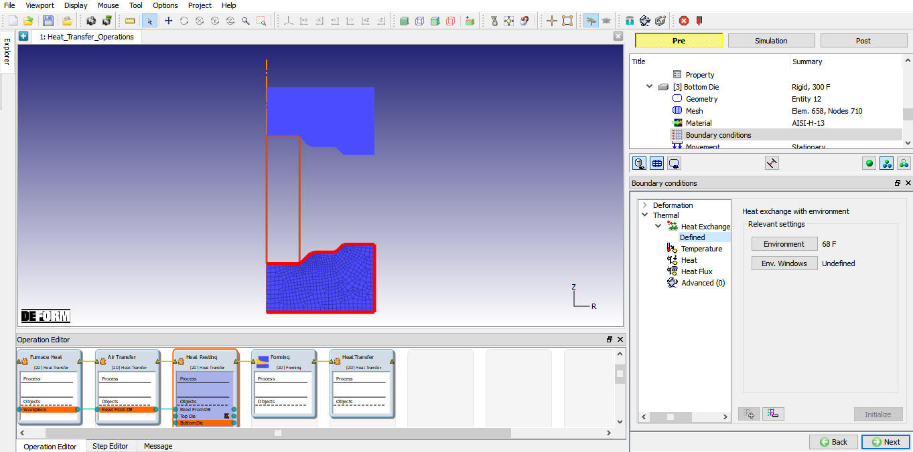
Heat exchange with Environment BCC for bottom die
Now from the ‘Positioning’ enter the ‘Positioning objects’ menu where we first move the top die away from the workpiece so that heat resting accounts for the heat transfer between workpiece and bottom die.
To accomplish this first click on  button. Select the top die,‘Offset’ method and distance vector as (x=0, y=4). Click on
button. Select the top die,‘Offset’ method and distance vector as (x=0, y=4). Click on  will move the top die away from the workpiece. (see Fig. 2DHTRL1.36.)
will move the top die away from the workpiece. (see Fig. 2DHTRL1.36.)
Click on  to close the ‘Object Positioning window. Click on
to close the ‘Object Positioning window. Click on  to define scheduled position the bottom die.
to define scheduled position the bottom die.
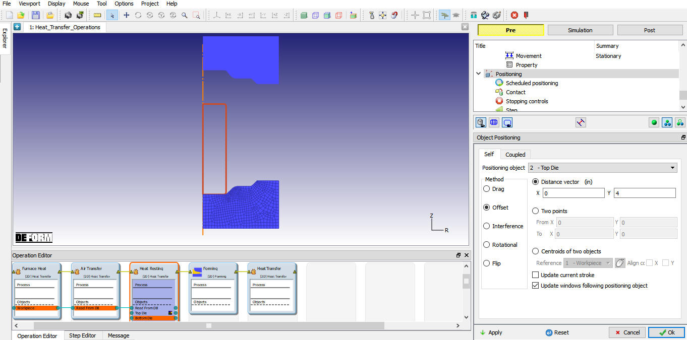
Positioning Top die in resting operation
As Bottom die we need to position with respect to Read from DB object Workpiece, so we have to schedule position during DB generation. Click on  (Add) button and select the ‘Positioning object’
as bottom die, method as ‘Interference’ with respect to ‘Workpiece’ in the +Y direction (see Fig. 2DHTRL1.37.).
Note that positioning details added in the scheduled positioning will be accounted prior to inter object data generation for this operation. No physical movement of the dies will be seen at this point. Click on
(Add) button and select the ‘Positioning object’
as bottom die, method as ‘Interference’ with respect to ‘Workpiece’ in the +Y direction (see Fig. 2DHTRL1.37.).
Note that positioning details added in the scheduled positioning will be accounted prior to inter object data generation for this operation. No physical movement of the dies will be seen at this point. Click on  to continue.
to continue.
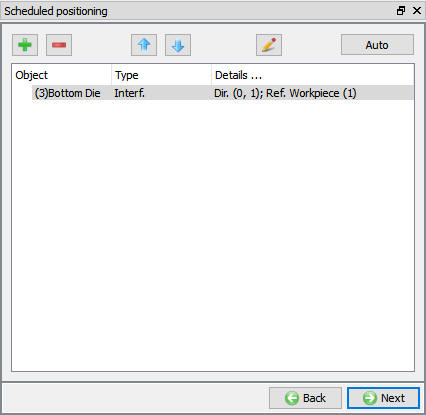
Scheduled positioning Bottom die With respect to workpiece
Select User type contact and click on  (Add relationship) button and select Bottom die as Master and Workpiece as Slave as shown in Fig. 2DHTRL1.38.
(Add relationship) button and select Bottom die as Master and Workpiece as Slave as shown in Fig. 2DHTRL1.38.
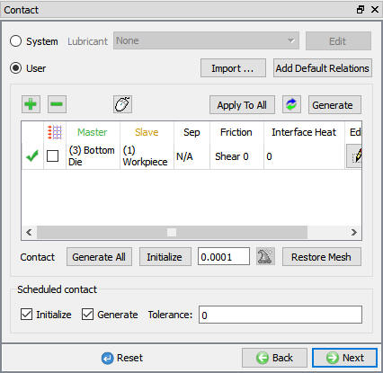
Inter-object relationship between workpiece and bottom die
Click on  (Edit) relationship button and select the pull down option " Free Resting" in the thermal section to define the inter-object heat transfer coefficient
as shown in Fig. 2DHTRL1.39. Click
(Edit) relationship button and select the pull down option " Free Resting" in the thermal section to define the inter-object heat transfer coefficient
as shown in Fig. 2DHTRL1.39. Click  to close the Editing window. It will generate the inter-object contact at the beginning of the resting operation while simulating. Click on
to close the Editing window. It will generate the inter-object contact at the beginning of the resting operation while simulating. Click on  until step controls window.
until step controls window.
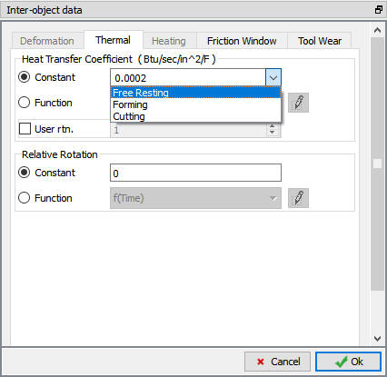
Inter-object Heat transfer coefficient selection for resting
In Step Controls window select number of steps as 10, with 0.4 sec each and saving every second step (see Fig. 2DHTRL1.40.).
Click on  to Generate DB window and click on
to Generate DB window and click on  from Database generation window to continue defining Forming operation.
from Database generation window to continue defining Forming operation.
Step controls for heat resting operation
The Forming operation runs for a specific stroke of (7.25”) the upper die. As we are making all objects as read from DB, objects data will come from previous operations, with thermal history. So pass the all objects from Heat resting operation to Forming operation as shown in Fig. 2DHTRL1.41.
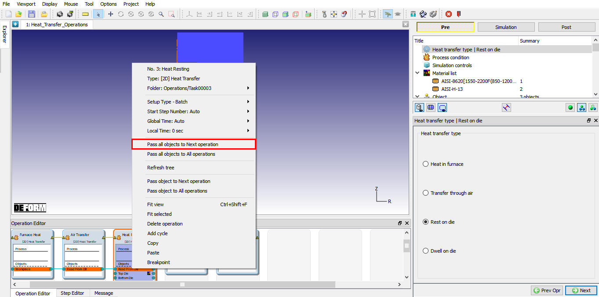
Passing objects to read from DB
Click on  for Geometry type window and accept the Simulation controls default Simulation modes selected (Deformation and Heat transfer) as shown in Fig. 2DHTRL1.42. Click on
for Geometry type window and accept the Simulation controls default Simulation modes selected (Deformation and Heat transfer) as shown in Fig. 2DHTRL1.42. Click on  until object window.
until object window.
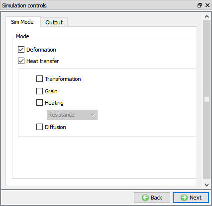
Simulation controls settings for Forming operation
In objects page confirm all objects data type as Read from DB and with no movement defined, click on Top Die- Movement branch from operation to define top die movement controls.
For the top die assign a constant die movement of 1 in/sec in the negative 'Y’ direction as shown in Fig. 2DHTRL1.43. (Click preview object movement icon to view the movement of the top die, if the Step increment is defined).
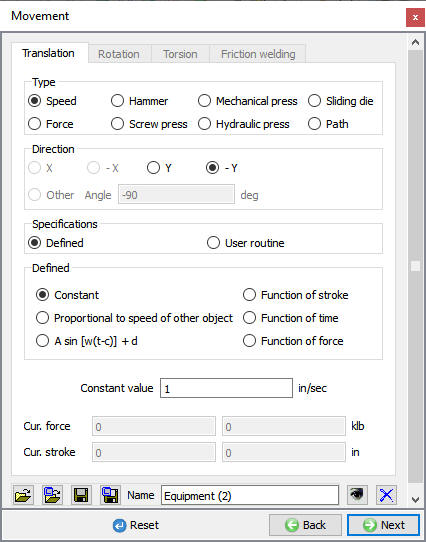
Movement controls for Top die
Click on Scheduled positioning branch in operation tree to define the positioning for Top die. Now click on  (Add) button and select the ‘Positioning object’ as top die, method as ‘Interference’
with respect to ‘Workpiece’ in the -Y direction (see Fig. 2DHTRL1.44.). Click on
(Add) button and select the ‘Positioning object’ as top die, method as ‘Interference’
with respect to ‘Workpiece’ in the -Y direction (see Fig. 2DHTRL1.44.). Click on  to continue.
to continue.
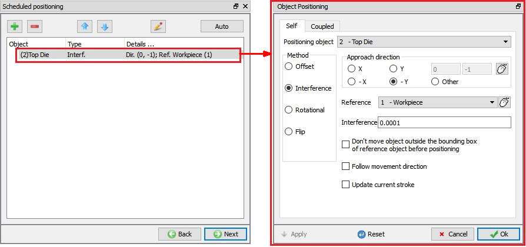
Scheduled positioning for Top die in forming operation
Select user type contact and click on  button. It will add the relationship between the Billet, Top Die and Bottom Die (see Fig. 2DHTRL1.46.).
As the Dies are Rigid and Billet is plastic, Top and Bottom Dies are considered as Master and Billet as Slave. In order to predict the fold during deformation, self contact will be assigned for Billet.
button. It will add the relationship between the Billet, Top Die and Bottom Die (see Fig. 2DHTRL1.46.).
As the Dies are Rigid and Billet is plastic, Top and Bottom Dies are considered as Master and Billet as Slave. In order to predict the fold during deformation, self contact will be assigned for Billet.
Highlight the Top Die – Billet relationship and click the  button to modify the contact conditions. In the friction section of the screen (see Fig. 2DHTRL1.45.),
there is a pull-down menu that allows the user to choose the appropriate friction conditions of common forming processes.
button to modify the contact conditions. In the friction section of the screen (see Fig. 2DHTRL1.45.),
there is a pull-down menu that allows the user to choose the appropriate friction conditions of common forming processes.
Since this is hot forming simulation and the dies are steel, use the pull down menu and select Hot forming (lubricated) from the list. A friction value of 0.3 will automatically be selected.
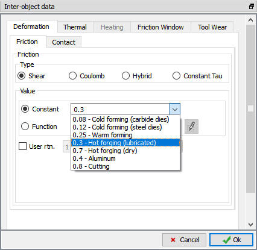
Inter-object friction coefficient definition window
Click on  to go back to Inter-Object window, Since the friction conditions are the same for all the object pairs, the
to go back to Inter-Object window, Since the friction conditions are the same for all the object pairs, the  button can be used to copy the interface properties from the first relationship to all of the others. After this is done, all relationships will have a friction of 0.3 defined as shown in Fig. 2DHTRL1.46. Since the contact will initialize and generate while generating database. Click on
button can be used to copy the interface properties from the first relationship to all of the others. After this is done, all relationships will have a friction of 0.3 defined as shown in Fig. 2DHTRL1.46. Since the contact will initialize and generate while generating database. Click on  to continue.
to continue.
Inter-Object relationship definition for forming operation
In stopping control window check the Max. die stroke stopping control and define primary die displacement as (0,7.25) as shown in Fig. 2DHTRL1.47. Advanced stopping options are available in Expert mode ( ). Click on
). Click on  to define the step controls.
to define the step controls.
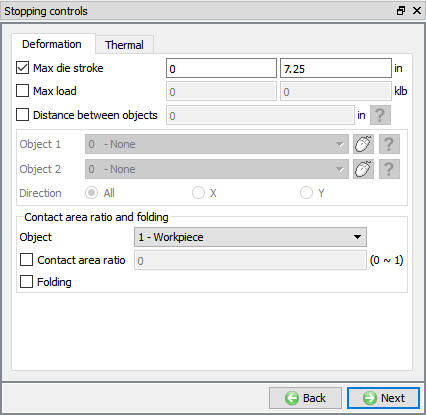
Die stroke stopping control for forming operation
In step controls window define number of steps as 100, at 0.0725” per step of die movement, step increment to save as 10 for the primary die (which is object number 2 in this simulation) as shown in Fig. 2DHTRL1.48.
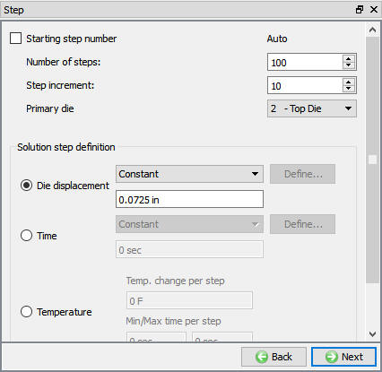
Step controls settings for forming operation
Click on  and click on
and click on  button to continue define the Heat Dwelling operation.
button to continue define the Heat Dwelling operation.
Heat dwelling is nothing but heat transfer after the deformation operation for a particular time and the corresponding time is called heat dwelling time or simply dwell time.
Name the Operation as Heat Dwelling and select the Dwell on die heat transfer type radio button as shown in Fig. 2DHTRL1.49.
Heat transfer type for Heat Dwelling operation
Click on  and accept the Dwell time of 4 sec in Environment temperature 68°F and default Convection coefficient as shown
in Fig. 2DHTRL1.50.
and accept the Dwell time of 4 sec in Environment temperature 68°F and default Convection coefficient as shown
in Fig. 2DHTRL1.50.
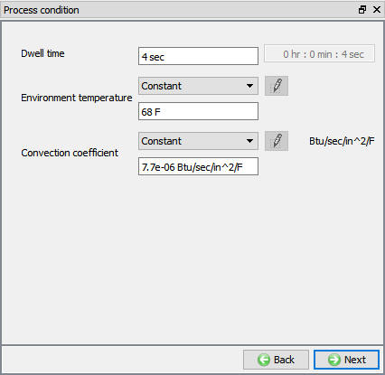
Process condition settings for Heat Dwelling operation
The default data is set for all the objects are read from DB (coming from the previous operations, along with thermal history). Accept the default conditions for the objects and click on  to proceed until Contact (Inter-Object Contact) window.
to proceed until Contact (Inter-Object Contact) window.
Select user type contact and click on  button. Highlight the Top Die – Billet relationship and click the
button. Highlight the Top Die – Billet relationship and click the  button to modify the contact conditions. Select the pull down option " Free Resting" in the thermal section to define the inter-object heat transfer coefficient as shown in Fig. 2DHTRL1.37.
button to modify the contact conditions. Select the pull down option " Free Resting" in the thermal section to define the inter-object heat transfer coefficient as shown in Fig. 2DHTRL1.37.
Click on  button and click
button and click  to close the Editing window (see Fig. 2DHTRL1.51.).
It will generate the inter-object contact during database generation. Click on
to close the Editing window (see Fig. 2DHTRL1.51.).
It will generate the inter-object contact during database generation. Click on  until step controls window.
until step controls window.
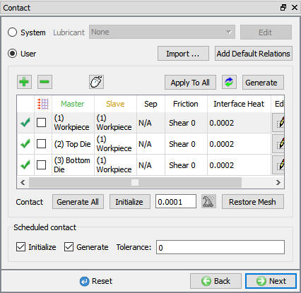
Inter-object contact relationship for heat dwelling operation
In Step Controls window select number of steps as 10, with 0.4 sec each and saving every second step (see Fig. 2DHTRL1.52.). This completes the multiple operations with all heat transfer operations setup, so to simulate the problem switch to Simulation tab above the object tree.
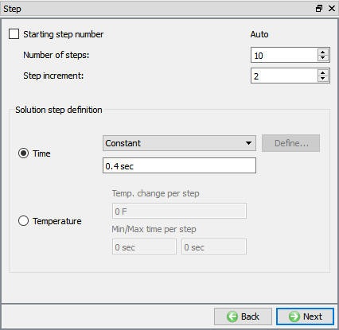
Step controls for heat dwelling operation
Click on the  action label to open the Run Options dialog as shown in Fig. 2DHTRL1.53. Use
the default Continue Run option to select “Continue from the last step” (from step -1) option and then select the Simulation mode as Interactive and click on
action label to open the Run Options dialog as shown in Fig. 2DHTRL1.53. Use
the default Continue Run option to select “Continue from the last step” (from step -1) option and then select the Simulation mode as Interactive and click on  button to run the simulation.
button to run the simulation.
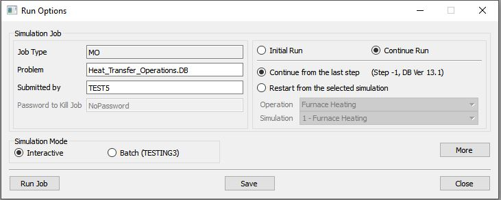
Run Simulation popup window
Monitor the progress of the simulation by looking at the Simulation Graphics, Simulation Message and Simulation Log tab, making sure that the  option is checked. (see Fig. 2DHTRL1.54.)
option is checked. (see Fig. 2DHTRL1.54.)
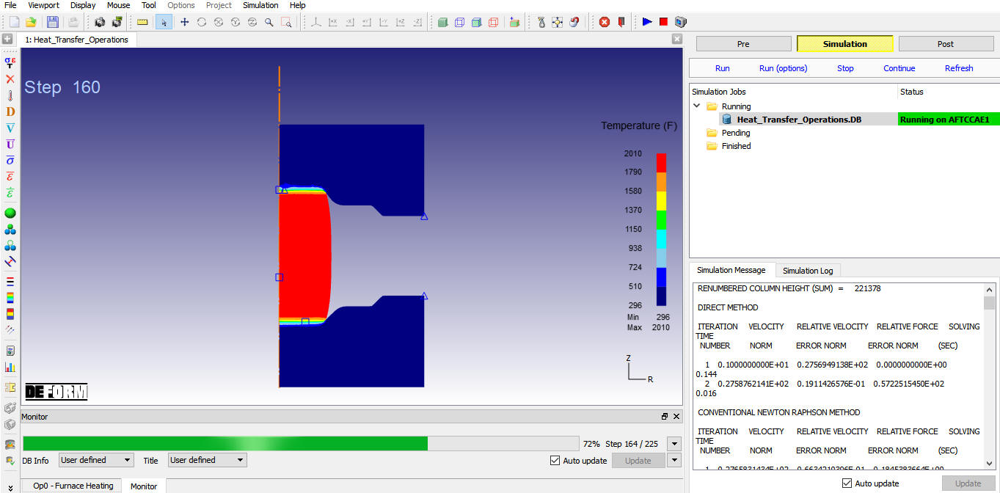
Simulation mode displaying the furnace heating running status
After completion of the all multiple operation in Simulation log file it gives the log message as "MULTIPLE OPERATION COMPLETED.", then switch to Post tab to view the simulation results.
In post processor Step list below the graphic area indicates step numbers available from the different operations simulated. A set of state variables available from the ‘Post’ menu can be used review the model response. Please note that for the first two operations only the thermal data for the workpiece is available as the dies are introduced from the third operation. And the deformation results can be seen for the Deformation operation (see Fig. 2DHTRL1.55.)
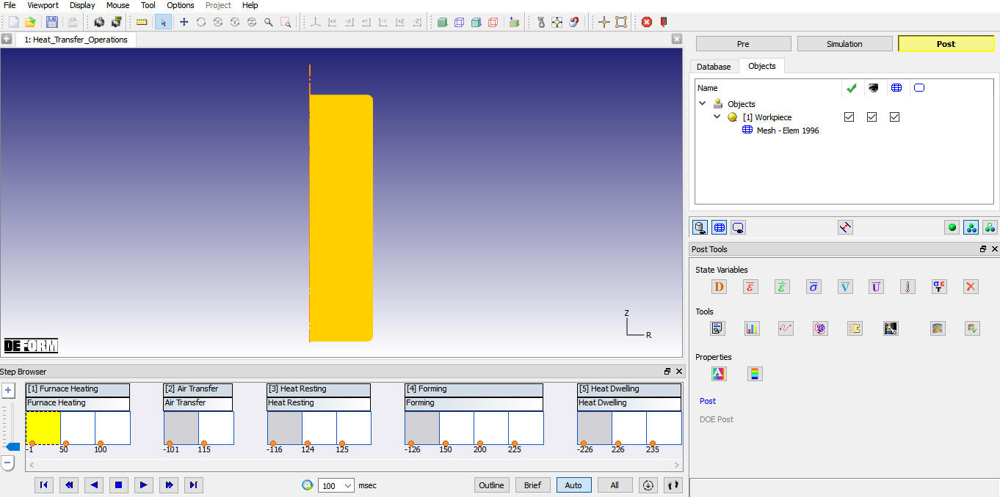
MO Post processor after simulating all operations
Some important state variables can be selected directly from ‘Post’ and the rest can be accessed through State Variable dialog by clicking on  icon. (see Fig. 2DHTRL1.56.)
icon. (see Fig. 2DHTRL1.56.)
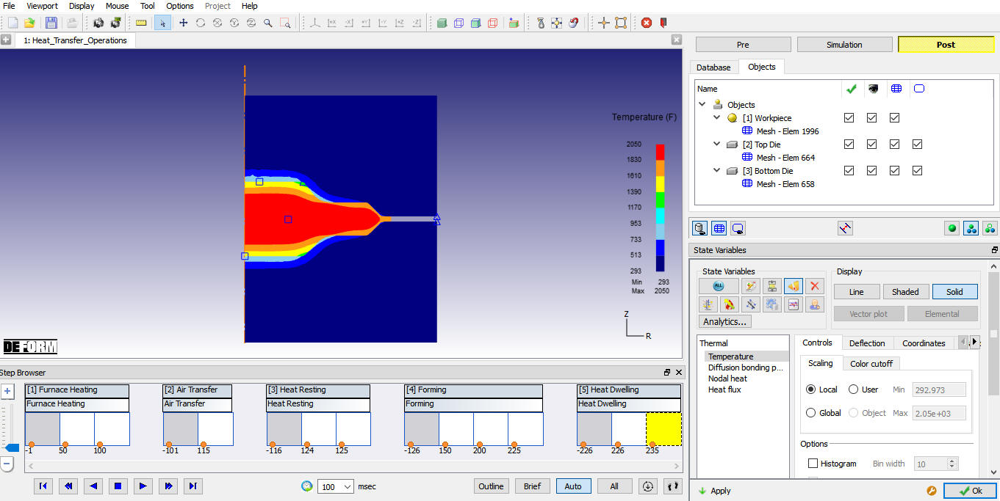
Temperature plot for all objects at the end of multiple operations
Plot Temperature state variable and play the steps from first operation to observe the heat transfer in workpiece and dies from Furnace heating to Heat dwelling operation as shown in Fig. 2DHTRL1.57.
Hat transfer in objects from furnace heating to heat dwelling operation